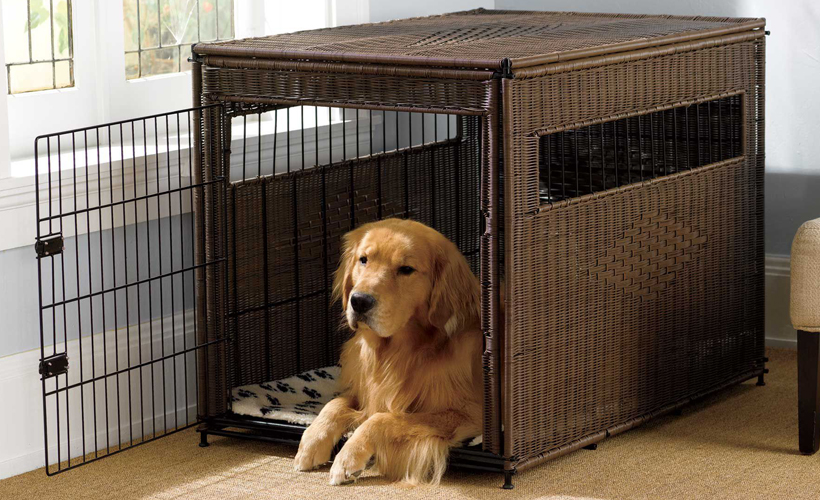
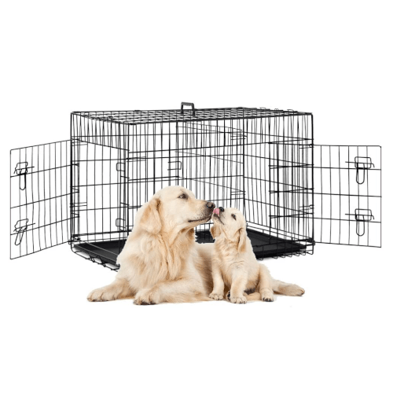
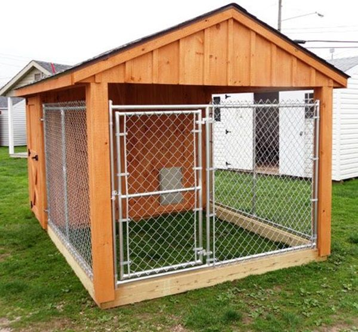

Psi su po prirodi životinje koje traže jazbinu, manji ograđeni kutak u kom će se osećati bezbedno. Ta instinktivna potreba može se lako primetiti kod pasa koji žive na ulici. Tu potrebu možete primetiti i kod Vašeg ljubimca, pogotovo u slučaju da se pas plaši buke, poput grmljavine i petardi. Ukoliko primetite da se pas povlači u određeni deo stana, npr. ispod stola, to Vam isto demonstrira prirodnu potrebu za zajbinom.
Kavezi za pse idealno su rešenje kao zamena za jazbinu. Ne samo što može biti sigurno mesto za Vašeg ljubimca, kavez za pse takođe može biti oblik kućice za pse u zatvorenom prostoru i mesto gde će Vaš ljubimac moći bez ometanja da odmara.
Zašto vlasnici pasa vole kaveze za pse?

Pored ogrlice i povoca, kavez za pse je dokazano efikasno sredstvo u dresuri, preporučeno od mnogih dresera, odgajivača i veterinara. Kada se jednom navikne na kavez, neželjeno ponašanje psa se u potpunosti može izbeći. Tu spada vršenje nužde u stanu, uništavanje stvari, kopanje po parketu, nepotrebno lajanje, kao i zavijanje. Kavez za pse je takođe pogodan za prevazilaženje separacione anksioznosti, kojoj su posebno sklone pojedine rase.
Lakše je prevoziti psa koji se navikao na kavez za pse, što doprinosi bezbednijoj vožnji kako za psa, tako i za vozača.
Kavez za pse kao sredstvo učenja psa gde da vrši nuždu

Kavez za pse je dokazano najbrži način da psa naučite da vrši nuždu napolje. Instinktivno, psi ne vrše nuždu tamo gde spavaju. Psi prirodno izbegavaju da borave blizu mesta gde vrše nuždu. Kada se paz odmah izvede napolje, po puštanju iz kaveza, vrlo brzo će naučiti šta se od njega očekuje. Veoma je bitno da se pas redovno izvodi, pogotovo kada je u pitanju štene koje bi se trebalo izvoditi napolje na svakih sat vremena, a potogoto odmah nakon igre i jela.